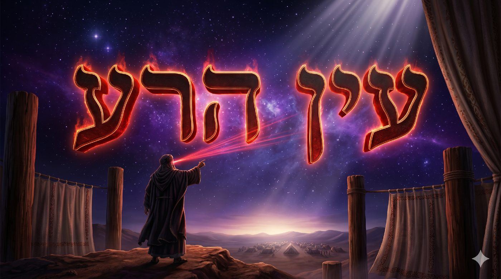
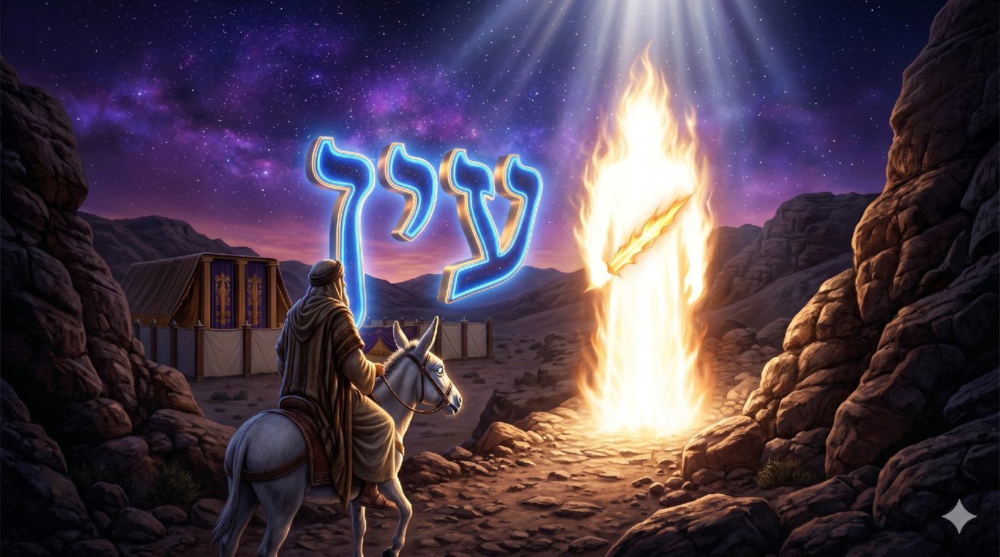
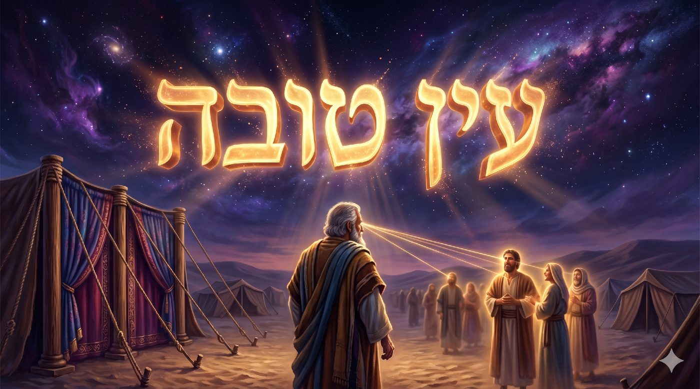

Savoir diriger son œil
Balak, l'œil mauvais de Bilaam et le secret des tentes qui ne s'exposent pas, ou pourquoi tout, dans la paracha, se joue dans la direction d'un regard.
L'ouverture de la paracha de Balak est terrifiante. Balak, roi de Moav, a vu ce qu'Israël a fait aux Amoréens. Il sait qu'il ne peut pas les affronter militairement. Alors il va chercher une arme plus ancienne et plus profonde : la malédiction. Il envoie quérir Bilaam, fils de Béor, dont la réputation traverse les siècles et lui dira : « Celui que tu bénis est béni, et celui que tu maudis est maudit » (Bamidbar 22:6).

Bilaam n'est pas un charlatan. Le Talmud le reconnaît comme le plus grand prophète que les nations aient jamais produit, l'équivalent de Moshé Rabbénou pour le monde des nations (Berakhot 7a). Sa puissance est réelle, son accès au divin l'est aussi. Et pourtant, quelque chose en lui est profondément mauvais.
Bilaam y est ainsi décrit comme שְׁתֻם הָעַיִן (shetoum haAyin), « l'homme à l'œil bouché » (Bamidbar 24:3). Rachi hésite entre deux lectures : un borgne, ou un homme dont un œil était fermé. Le Zohar, lui, va plus loin et nous donne la clé. Cet œil bouché n'est pas un défaut physique, mais une structure spirituelle. En termes d'attributs divins, Bilaam avait l'œil de la gevoura (la rigueur, le jugement) grand ouvert, et l'œil du 'hessed (la bonté, l'amour) fermé, bloqué, atrophié.
Regarder avec la seule gevoura, c'est regarder pour prendre, pour évaluer, pour dominer. Un regard qui juge sans bienveillance finit par consumer ce qu'il contemple. C'est la définition même du fameux עַיִן הָרָע (Ayin Hara), l'œil mauvais.
Le Ari Z"L ajoute une dimension plus profonde encore : Bilaam est un gilgul, une réincarnation de Lavan HaArami (Sha'ar HaGilgulim 36). Ce Lavan qui avait observé Yaakov pendant vingt ans, pour mieux le capturer et l'exploiter. Le même regard ressurgit chez Bilaam. Fasciné par Israël, incapable de s'en détacher, il veut le détruire précisément parce qu'il ne peut pas le posséder. L'œil mauvais est toujours, au fond, une jalousie métaphysique.
Et c'est ici que la paracha se met à nous parler directement. Car ce regard qui évalue, qui juge, qui prend sans rien donner, n'est pas réservé aux ennemis d'Israël. Il habite chacun de nous, chaque fois qu'on regarde quelqu'un pour le juger au lieu de le regarder, qu'on compare au lieu de contempler, qu'on scrute la faiblesse de l'autre pour s'en nourrir. C'est le regard de Bilaam. Et la paracha nous interroge : quel regard est le tien ?
Avec l'aide du Ciel et de nos maîtres, nous verrons pourquoi Bilaam, le plus grand prophète des nations, échoue là où Moshé réussit, et que tout se joue dans son regard. C'est là que cette paracha nous enseigne une vérité mystique profonde : le regard n'est pas passif. Il crée ou il détruit. Il donne la vie ou il la consume. Mais Israël, ce peuple « qui habite seul », porte une protection invisible : son intériorité, qui ne s'expose pas. Du regard empoisonné de Bilaam jusqu'à la beauté que la Che'hinah (la Présence divine) pose sur les tentes de Yaakov, nous allons lire Balak comme un enseignement sur la nature du regard : en nous, entre nous, et entre le Ciel et la terre.
• L'œil de Bilaam : gevoura sans 'hessed
• L'œil de l'ânesse : quand l'animal dépasse le prophète
• L'œil sans prise : « un peuple qui habite seul » et le yi'houd
• L'œil bon d'Avraham : Ayin Tova, le regard qui donne la vie
• L'œil qui ne s'expose pas : Mah Tovu et la beauté des tentes
• L'œil qui consent à être vu : l'inversion finale
• L'œil qui verra la délivrance : un astre se lève de Yaakov
La scène est l'une des plus étranges de tout le Tana'h. Bilaam monte sur son ânesse pour rejoindre Balak. Un ange de D.ieu se poste sur le chemin, l'épée à la main. L'ânesse le voit. Bilaam, lui, ne voit rien. L'ânesse se détourne, se plaque contre le mur, puis finit par s'immobiliser et refuse d'avancer. Bilaam la frappe trois fois. Alors D.ieu ouvre la bouche de l'ânesse, et elle parle pour lui décrire le danger apparent.
La question s'impose : comment un prophète du calibre de Bilaam peut-il être aveugle là où sa propre ânesse voit clairement ?
Le Maharal de Prague (Gour Aryeh, Bamidbar 22) donne une réponse qui coupe le souffle. L'intellect orgueilleux bloque la perception spirituelle. Bilaam avait développé une intelligence prophétique d'une puissance extraordinaire, mais mise au service de lui-même, de son ego, de sa réputation. Cette intelligence était devenue un écran opaque. Elle filtrait le réel au lieu de le laisser entrer. L'ânesse, elle, n'a pas d'arrière-pensée. Elle voit ce qui se tient devant elle, sans le traiter ni le déformer. Sa nefesh behamit (l'âme animale) est transparente.
C'est le paradoxe que la Torah nous montre ici : la pureté de la perception n'est pas proportionnelle à l'intelligence, mais elle est inversement proportionnelle à l'ego. Plus on cherche à imposer sa grille de lecture sur le réel, moins on voit. Plus on se vide de soi, plus on voit.

Le Ari Z"L ajoute une couche de sens qui éclaire toute la scène (Sha'ar HaGilgulim 22). L'ânesse de Bilaam n'est pas une ânesse ordinaire. Elle est elle-même un gilgul, l'âme d'un être qui devait réparer un lien noué avec Bilaam dans une vie antérieure. Dans cette dernière incarnation, elle vient lui sauver la vie en le forçant à s'arrêter. Ce qui semblait le plus bas, une bête de somme, accomplit ce que le plus haut, un prophète, ne sait pas faire.
Il y a là un enseignement sur le regard intérieur. La nefesh behamit, notre âme animale, nos instincts, notre corps, n'est pas l'ennemie de la spiritualité. Pure, non corrompue par l'orgueil intellectuel, elle parvient à voir ce que l'esprit rationnel manque. Les grands maîtres 'hassidiques l'ont expliqué : la joie du corps dans le service divin, le chant, la danse, le repas de Chabbat, ouvre une forme de perception que l'intellect seul n'atteint jamais.
Le Baal Chem Tov disait : « J'ai appris mes Dix-Huit Bénédictions non d'un ange, mais d'un simple paysan. » Du fond du texte sacré, l'ânesse de Bilaam dit la même chose : parfois, c'est le plus simple qui voit le plus loin.
La pureté du regard ne se mesure pas à l'intelligence : c'est l'ânesse qui voit l'ange quand le prophète, lui, reste aveugle.
Bilaam tente une deuxième fois de maudire Israël. Il change de lieu, espère un autre angle. Et ce qui sort de sa bouche est encore une bénédiction, mais cette fois d'une densité théologique rare : « Voici un peuple qui habite seul et ne se compte pas parmi les nations » (Bamidbar 23:9).
Rachi lit ces mots comme une constatation historique. Le Maharal (Netsa'h Yisrael, ch. 1) y voit une loi ontologique. Israël ne devrait pas habiter seul : Israël est seul, par nature, par structure. Sa solitude relève de la métaphysique, pas d'une stratégie d'isolement.
Le Etz Haim du Ari Z"L l'explique en termes des attributs divins. Au sommet de l'âme, à son niveau le plus élevé, la ye'hida (l'étincelle d'unité), se tient une dimension structurellement unifiée, meyou'hedet. Elle ne se mélange pas, ne se fond pas, reste elle-même quoi qu'il advienne au-dehors. Ce yi'houd (cette unité intérieure) est l'armure d'Israël.
Une klipa (une écorce, une force d'impureté qui cherche à capter le sacré) s'accroche à ce qui se fragmente. Elle se glisse dans les fissures, dans les divisions, dans les contradictions internes. Mais ce qui est unifié, ce qui tient solidement à soi, ne lui offre aucune prise. Voilà pourquoi la malédiction de Bilaam ne peut pas atteindre Israël. Aucune magie extérieure ne le protège ; c'est la cohérence structurelle de son intériorité qui le rend inattaquable.
Et c'est pourquoi, en termes mystiques, la vraie menace est la désunion interne. Ce n'est ni Balak, ni Bilaam, mais la fragmentation de l'intériorité du peuple. Chaque sinat 'hinam (haine gratuite), chaque division artificielle au sein du peuple, ouvre une fissure dans le yi'houd. C'est par là que l'ennemi entre, jamais par l'extérieur, toujours par les brèches qu'on creuse soi-même.
Le Zohar (Balak 185b) le formule de façon saisissante : Bilaam cherchait un « côté » d'Israël, un angle, une faille, un point de division, pour y accrocher sa malédiction. Et chaque fois, D.ieu lui répondait que ce peuple n'offre aucun côté accessible. Son unité le rend lisse. La malédiction glisse sur le peuple d'Israël. Habiter seul devient alors une dignité. La dignité de celui qui n'a pas besoin du regard d'autrui pour se définir, qui n'attend ni validation ni reconnaissance des nations pour exister. Cette liberté-là est la plus profonde de toutes : ne pas dépendre du regard extérieur pour savoir qui l'on est. Israël ne tient pas par les murs qui l'entourent, mais par l'unité qui ne laisse à l'ennemi aucune prise au-dedans.
Dans la Mishna (Avot 2:9), Rabban Yo'hanan ben Zakaï demande à ses disciples : « Quelle est la bonne voie à laquelle l'homme doit s'attacher ? » Rabbi Yehoshoua répond : l'œil bon (עַיִן טוֹבָה, Ayin Tova). Plus loin, la Michna (Avot 5:19) nous enseigne qu'Avraham Avinou se distingue de Bilaam exactement sur ce point : Avraham a un bon œil, Bilaam un œil mauvais.

Ce n'est pas une métaphore. Le Ari Z"L développe une véritable physique spirituelle du regard. Il explique que la lumière divine connaît deux directions : or yashar (la lumière directe qui descend) et or 'hozer (la lumière réfléchie qui remonte). Le regard humain obéit à la même loi. Un regard de 'hessed émet de la lumière vers ce qu'il contemple : il donne de l'existence à ce qu'il voit. Un regard de gevoura aspire la lumière vers le dedans : il retire l'existence et consume ce qu'il fixe.
Avraham avait un עַיִן טוֹבָה (Ayin Tova), un œil bon. Il regardait chaque personne d'un regard qui lui donnait quelque chose. La tradition rapporte qu'il voyait le bien en chacun, là même où d'autres ne voyaient que des défauts (cf. l'épisode des voyageurs dans sa tente). Ce n'était pas de la naïveté, c'était une puissance créatrice. Le regard bienveillant actualise les potentialités cachées. Il aide l'autre à devenir ce qu'il porte déjà en lui sans l'avoir encore manifesté.
Bilaam regardait Israël pour en extraire quelque chose : le secret de sa force, sa faille, l'angle par où l'atteindre. Avraham regardait ses hôtes dans le désert et leur offrait eau, pain, ombre et abri. Deux regards, deux directions d'un même organe, deux effets radicalement opposés sur le monde.
Le Tanya (Liqouté Amarim, ch. 32) développe ce principe à propos de l'amour du prochain. « Aime ton prochain comme toi-même » : l'injonction porte une exigence éthique, et une vérité mystique. Quand tu poses sur l'autre le regard que tu portes sur toi-même, avec le même désir de le voir grandir et s'accomplir, ton regard devient un acte divin. Il prend part à la création continue du monde.
C'est là que se joue le vrai tikoun (la réparation) de la paracha. Bilaam est venu maudire, regarder pour détruire. Avraham, l'ancêtre spirituel d'Israël, avait posé le modèle inverse : regarder pour bénir. Le Mah Tovu, cette beauté que Bilaam a vue, dépassait le simple constat. C'était, malgré lui, un acte עַיִן טוֹבָה (d'Ayin Tova, de bon œil). Et cet acte involontaire l'a retourné de l'intérieur. Un même œil peut donner la vie ou la consumer : tout se joue dans la direction où il envoie sa lumière.
« Comme tes tentes sont belles, Yaakov, tes demeures, Israël » (Bamidbar 24:5). C'est le verset que nous récitons chaque matin en entrant à la synagogue. Ces paroles, sorties des lèvres d'un ennemi, sont devenues notre seuil quotidien.
Rachi explique ce que Bilaam a vu : les entrées des tentes d'Israël ne se faisaient pas face. Chaque famille préservait son intimité. L'espace intérieur restait à l'abri du regard des voisins. C'est cette tzniout (la pudeur, la retenue), jusque dans l'architecture, qui arrache à Bilaam son admiration malgré lui.
Mais le Zohar va bien au-delà de Rachi. Ce que Bilaam voit en levant les yeux sur le camp d'Israël (Bamidbar 24:2), c'est la Che'hinah qui repose sur les tentes. Il voit la présence divine visible, tangible, installée comme une nuée au-dessus du peuple. Et il est saisi d'une révérence qu'il ne peut pas contrôler.
Les tentes de Yaakov qui ne s'exposent pas : c'est l'image parfaite de la Malkhut (la royauté) orientée vers Tiferet (l'harmonie). C'est l'âme qui n'a pas besoin de se montrer pour exister. La vraie beauté est celle qui ne s'étale pas. Elle rayonne sans s'exposer.
Le Zohar ajoute (Balak 193a) que מַה (Mah) est l'un des noms divins, celui qui désigne Zeir Anpin (le Petit Visage) dans sa révélation à Malkhut. Sa valeur numérique est 45, comme Adam. Au-delà du sens littéral, « Mah Tovu » devient une contemplation de la beauté du nom divin reflétée dans les tentes d'Israël. Bilaam prononce un nom divin sans le savoir.
Et voilà pourquoi ce verset ouvre chaque matin. Il fonctionne comme une consigne pour la journée : entre dans le jour comme Israël habitait ses tentes, avec une intériorité préservée, un espace sacré qui ne s'ouvre pas à tous les vents, une pnimiyout (l'intériorité) tournée vers le Ciel et non vers le regard du dehors. Mah Tovu est une méditation sur la façon de traverser le monde sans se laisser consumer par lui.
La vraie beauté est celle qui rayonne sans s'exposer, tournée vers le dedans et ouverte vers le Haut.
La paracha de Balak s'achève sur une étrange amertume. Bilaam n'a pas réussi à maudire Israël. Ses malédictions se sont retournées en bénédictions. Il rentre chez lui, mais avant de partir, il glisse à Balak un dernier conseil empoisonné : attirer Israël vers les filles de Moav et le culte de Baal Peor (Bamidbar 25, explicité plus loin en Bamidbar 31:16). Si la malédiction frontale ne peut rien contre Israël, peut-être que la séduction par le dedans le pourra.
Ce conseil dit quelque chose d'essentiel sur la nature de l'עַיִן הָרָע (Ayin Hara), l'œil mauvais. Quand la forteresse est unifiée, l'œil mauvais ne peut pas l'attaquer du dehors. Alors il cherche une porte ouverte de l'intérieur. Et la seule qu'il puisse trouver, c'est le regard que nous posons nous-mêmes vers l'extérieur. Dès qu'Israël se met à regarder les statues et les femmes de Baal Peor, dès qu'il tourne les yeux au-dehors avec désir et envie, la protection du yi'houd s'effrite.
Le tikoun de la paracha tient en un geste : changer la direction du regard, sans le fermer. Le Tehilim (34:16) dit : « עֵינֵי ה' אֶל צַדִּיקִים » (Einei Hachem el tzaddikim), les yeux de l'Éternel sont sur les justes. Le regard divin est actif, présent, tourné vers nous. La spiritualité juive renverse alors toute la perspective : plutôt que de chercher à voir le divin, apprendre à être vu par Lui. Plutôt que de projeter notre regard au-dehors, nous ouvrir à être contemplés du dedans.
C'est ce que cherche l'hitbodedout (la méditation 'hassidique). Rien à voir avec une technique de visualisation : il s'agit de s'ouvrir, de se laisser traverser par le regard divin, de se laisser voir et connaître, de consentir à la transparence devant le Ciel tout en gardant une opacité protectrice devant le monde.
Le Maggid de Mezeritch enseignait (Or Torah, Balak) que la prière inverse le sens du regard : ce n'est plus toi qui cherches à voir D.ieu, c'est Lui qui te voit. L'annulation de soi dans la prière, le bitoul, ne te fait pas disparaître. Elle te fait consentir à être regardé pleinement, sans défense et sans masque. C'est le courage de l'ânesse, qui ne détourne pas les yeux, même face à l'ange dressant son épée.
Bilaam regardait pour maudire. La Che'hinah regarde pour bénir. Entre ces deux regards, celui de l'ennemi qui veut consumer et celui du Ciel qui veut couronner, il nous reste un choix : vers lequel allons-nous tourner le nôtre ? « Comme tes tentes sont belles, Yaakov. » La beauté d'Israël tient dans ce choix : un regard tourné vers le dedans et ouvert vers le Haut, celui d'un peuple qui habite seul sans jamais être aussi accompagné.
Le sommet du regard n'est pas de voir le Ciel, mais de consentir à être vu par Lui.
Il y a une ironie vertigineuse dans cette paracha. La prophétie messianique la plus explicite de toute la Torah ne sort pas de la bouche de Moshé, ni d'un prophète d'Israël. Elle sort de la bouche de Bilaam. Lui qui était venu maudire lève les yeux une dernière fois et voit, malgré lui, le bout de l'histoire : « דָּרַךְ כּוֹכָב מִיַּעֲקֹב » (darakh kokhav miYaakov), « un astre se lève de Yaakov » (Bamidbar 24:17). L'œil mauvais, contraint d'ouvrir le bon œil, finit par voir le Machia'h. Son regard empoisonné devient, à son corps défendant, le canal de la promesse.
C'est le tikoun ultime du regard. Tout au long de l'exil, nous voyons comme à travers un voile, le regard partagé entre le dedans et le dehors, jamais tout à fait droit. Le prophète Yeshayahou promet qu'au retour à Tsion ce voile tombera : « עַיִן בְּעַיִן יִרְאו » (Ayin be'Ayin yirou), « ils verront les yeux dans les yeux » (Yeshayahou 52:8). Plus d'œil mauvais, plus de regard détourné. Le regard mutuel entre Israël et la Che'hinah, voilé depuis des siècles, deviendra plein et direct.
Et ce jour-là se prépare maintenant, dans chacun de nos regards. Chaque fois que nous choisissons l'œil qui donne plutôt que l'œil qui consume, nous réparons un peu l'œil du monde et nous rapprochons l'instant où tous se verront, enfin, les yeux dans les yeux.
| עַיִן בְּעַיִן יִרְאוּ בְּשׁוּב ה' צִיּוֹן | Les yeux dans les yeux ils verront, quand l'Éternel reviendra à Tsion (Yeshayahou 52:8) |
Chabbat Chalom !
Par B.A., à Saint-Mandé, 9 Tamouz 5786 / 24 juin 2026
Chiour dédié à l’évélation de l’âme de Itshak ben Camille יצחק בן קמיי תנצב׳׳ה
De nous accorder un regard pur, un œil bon, et la grâce de voir en chaque être humain la lumière que la Che'hinah y a déposée. Car les yeux de l'Éternel sont sur nous en tout temps, jusqu'au jour où nous Le verrons les yeux dans les yeux.
| Torah | Talmud |
| Bamidbar 22-24, la paracha de Balak ; 23:9, « un peuple qui habite seul » ; 24:2-5, Mah Tovu et la bénédiction ; 24:17, l'astre de Yaakov, la promesse messianique. Yeshayahou 52:8, « עַיִן בְּעַיִן יִרְאוּ », voir les yeux dans les yeux au retour à Tsion. | Berakhot 7a, Bilaam prophète des nations, l'égal de Moshé ; Sota 12b, Avraham contre Bilaam autour de l'œil bon (Ayin Tova). |
| Mishna | Rishonim |
| Avot 2:9, « l'œil bon » comme meilleure voie à choisir ; Avot 5:19, disciples d'Avraham contre disciples de Bilaam. | Rachi, Bamidbar 24:2, les tentes qui ne se font pas face, la tzniout ; 24:3, שְׁתֻם הָעַיִן (shetoum haAyin) ; Maharal, Gour Aryeh, l'intellect orgueilleux qui aveugle ; Netsa'h Yisrael, « un peuple qui habite seul », loi ontologique. |
| Mystique | Hassidout |
| Zohar, Balak 185b, la Che'hinah sur le camp d'Israël ; 193a, shetoum haAyin et gevoura sans 'hessed ; Ari Z"L, Sha'ar HaGilgulim 36, Bilaam gilgul de Lavan ; 22, l'ânesse et le tikoun d'une âme antérieure ; Etz Haim, la ye'hida et le yi'houd comme armure. | Tanya, Liqouté Amarim ch. 32, le regard comme acte de création ; Or Torah (Maggid de Mezeritch), la prière comme consentement à être vu par D.ieu. |